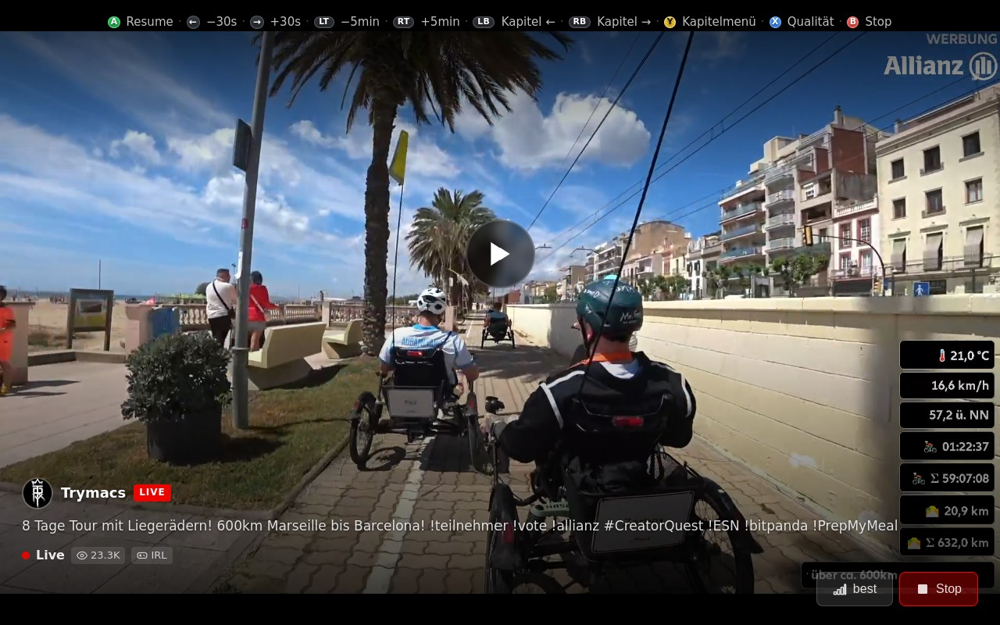
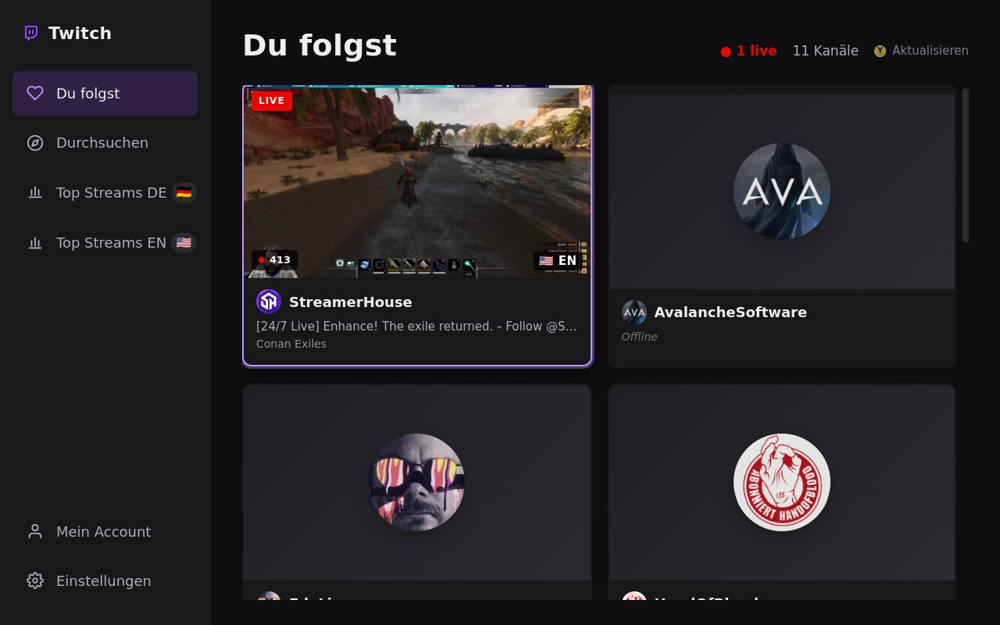
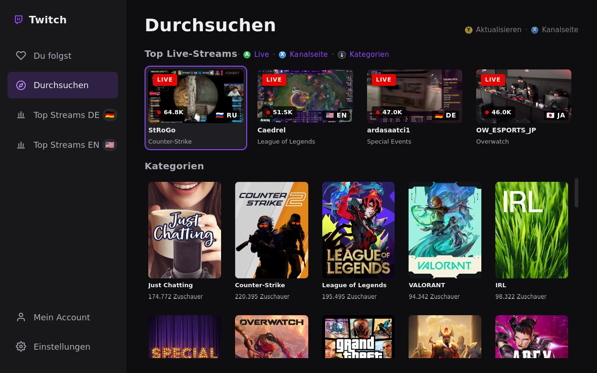
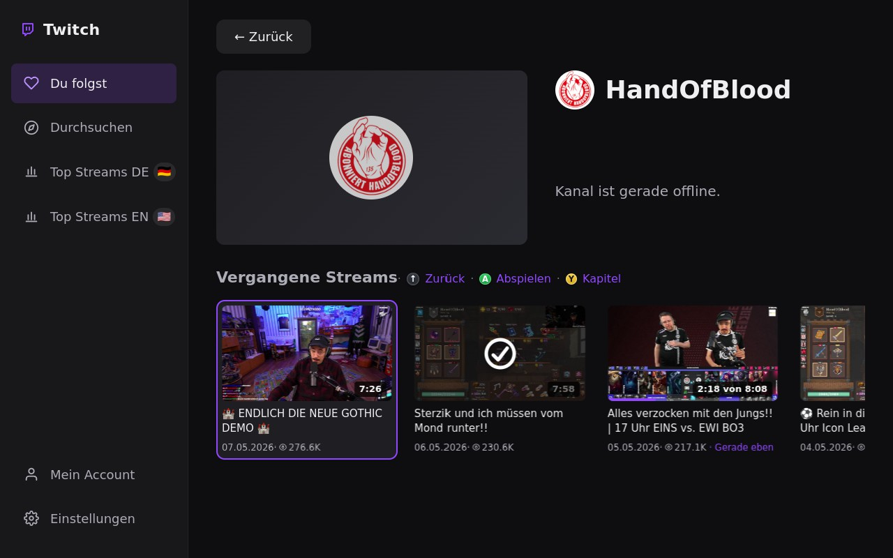

The Twitch Client
for Your Steam Deck
Der Twitch-Client
für dein Steam Deck
Watch live streams and VODs with full gamepad navigation — built for Steam Deck Gaming Mode. The open-source Twitch client for Steam Deck that works without a mouse or keyboard.
Live-Streams und VODs mit vollständiger Gamepad-Navigation — optimiert für den Steam Deck Gaming Mode. Der Open-Source-Twitch-Client für den Steam Deck, der ohne Maus auskommt.

Features
Funktionen
Everything you need.
Nothing you don't.
Alles, was du brauchst.
Nichts, was du nicht brauchst.
Gamepad NavigationGamepad-Navigation
Full controller support with A/B/X/Y, D-Pad, and shoulder buttons. Every screen is navigable from the couch — no mouse, no keyboard.
Vollständige Controller-Unterstützung mit A/B/X/Y, D-Pad und Schultertasten. Jede Ansicht vom Sofa bedienen — ohne Maus, ohne Tastatur.
Live Streams & VODsLive-Streams & VODs
Watch live streams and past broadcasts from channels you follow. Browse top streams and categories, filter by language.
Live-Streams und vergangene Sendungen gefolgter Kanäle ansehen. Top-Streams und Kategorien durchsuchen, nach Sprache filtern.
Resume & ChaptersFortsetzen & Kapitel
VODs resume exactly where you left off. Jump to any chapter with one button press. Watch history stored locally on the device.
VODs werden genau dort fortgesetzt, wo du aufgehört hast. Mit einem Knopfdruck zu jedem Kapitel springen. Verlauf lokal gespeichert.
Steam Deck OptimizedSteam Deck Optimiert
Maximized window in Gaming Mode, dark 1280×800 UI, and quality selection up to 1080p60. Delivered as a Flatpak for seamless installation.
Maximiertes Fenster im Gaming Mode, dunkle 1280×800-Oberfläche und Qualitätswahl bis 1080p60. Als Flatpak zur einfachen Installation.
Screenshots
Screenshots
See it in action In Aktion erleben



Installation
Installation
Install on your Steam Deck
in seconds
In Sekunden auf deinem
Steam Deck installieren
Download the .flatpak file from the GitHub Releases page, transfer it to your Steam Deck, then run:
Lade die .flatpak-Datei von der GitHub-Releases-Seite herunter, übertrage sie auf den Steam Deck und führe aus:
flatpak install --user twitch4steamdeck.flatpak
Download the latest release from the GitHub Releases page.
Lade das neueste Release von der GitHub-Releases-Seite herunter.